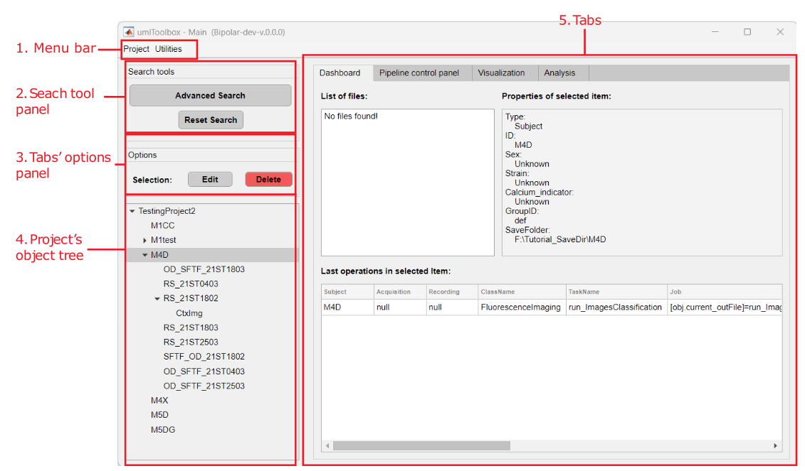

Example of a query filter.
The umIToolbox main graphical user interface (GUI) allows one to create and manage a project and its datasets, configure and run analysis pipelines and launch visualization apps.
umIToolbox: Opens an empty interface. Create or load a project file from the interface to use the GUI.
umIToolbox('C:/PATH/projFile.mat'): Opens the interface and automatically loads the project stored in projFile.mat file. The input is a string with the full path to the project file.

Main elements of the umIToolbox app.
Project
Utilities
Provides options for filtering the data shown in the object tree.
This panel displays options for each tab. The content of the options panel changes depending on which tab is selected. For details on each tab option, read the respective tab documentation in section 5.
Shows a tree containing the file structure of the project save folder. The tree behaviour changes depending on the selected tab. Dashboard and Visualization tabs allow single-item selection while the Pipeline control panel and Analysis tabs allow multi-selection.
Here are the links to the documentation of each tab:
Note
Note that the apps associated with each tab (i.e. the apps inside the Apps & tools panels) have their own documentation. Check the list here.
The Advanced Search GUI allows one to filter the object tree elements using query terms about objects properties such as a mouse's ID.
Advanced Search graphical user interface.
The Advanced Search interface is comprised of one search panel per object type (i.e. Subject, Acquisition and Modality) and a search method selector panel.
List of the object properties to perform the search on.
Logical operator that will be used with a second query term. Includes AND, OR and NOT.
Input box for the query terms. Type the term and press Enter to confirm.
Shows the final query term that will be used to filter the objects. The syntax works as follows:
(Term1[Field1]) OPERATOR (Term2[Field2])
For example, to search for the terms "OD" and "ST" in the ID field, the final query will be:
(OD[ID]) AND (ST[ID])
Tip
The query summary field is editable. So if you made a mistake in the query input box, it can be fixed in the Query summary box given that the syntax is maintained.
There are three options for the search query:
Note
Note that the Contains term and Whole word options are case sensitive!
In order to create a search query, follow these steps:
Example of a query filter.